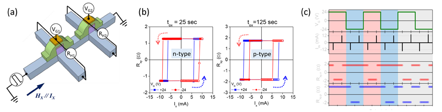

주제별 연구성과
주제별 연구성과
KAIST RESEARCH ACHIEVEMENTS
프로그램이 가능한 스핀기반
로직소자 기술 개발
신소재공학과 박병국
요약
현재 사용되는 컴퓨팅 기술은 논리 연산을 수행하는 프로세스와 기억을 하는 메모리가 물리적으로 분리된 폰노이만 구조를 사용하고 있다. 따라서 정보처리를 위해서 두 소자 사이에 데이터의 전송이 필수적이고 이에 따른 에너지 소모와 시간 지연이 발생한다. 이러한 폰노이만 병목현상은 특히 인공지능, 사물인터넷, 빅데이터 등 대용량 정보처리가 요구되는 최첨단 컴퓨팅 기술에서는 특히 심각한 문제를 야기합니다. 본 연구에서는 스핀오빗토크 스위칭 임계전류를 전계로 제어하는 기술을 이용하여 메모리와 로직을 동시에 수행하는 스핀기반 로직소자를 개발하였다. 또한 전계효과의 극성을 제어함으로 “n 형”과 “p 형” 특성을 지닌 스핀로직 소자를 최초로 개발하여 상보성 로직동작을 보고하였다. 본 연구에서 개발된 소자는 비휘발성과 프로그램이 가능한 특성을 가져, 향후 폰노이만 병목현상, 고집적의 물리적 한계 등 기존 반도체기반 소자의 한계를 극복할 기술로 활용될 것으로 기대된다.
연구배경
차세대 반도체 소재 기술 현재 사용되는 컴퓨팅 기술은 논리소자와 메모리소자가 공간적으로 분리되어 있는 폰노이만 구조를 사용하고 있다 (그림 1a). 따라서 정보처리를 위해서 두 소자 사이의 신호 전달에 의한 전력소모 및 신호지연을 피할 수 없고, 휘발성 특성으로 정보유지를 위한 지속적인 전력 공급으로 전력소모의 문제점을 야기한다. 또한 컴퓨터 CPU 및 스마트폰 AP의 성능은 메모리/논리 소자 개수에 비례하기 때문에 성능 향상을 위한 지속적인 용량 증가를 위해서는 소자의 집적도 향상 및 소모전력 감소 기술이 선행되어야 한다.
 그림 1. 컴퓨터 구조. (a) 논리소자와 메모리 소자가 분리된 기존 메모리.
그림 1. 컴퓨터 구조. (a) 논리소자와 메모리 소자가 분리된 기존 메모리.
(b) 논리소자와 메모리 소자가 결합된 스핀로직 소자
차세대 반도체 소재 기술
이러한 근본적인 문제를 해결하는 방법 중 하나는 논리소자에 정보저장 기능을 탑재한 로직메모리 소자를 도입하는 것으로 (그림 1b), 이를 위해서 비휘발성이면서 프로그램이 가능한 로직소자를 개발해야 한다. 스핀트로닉스는 전자의 고유의 성질인 전하와 스핀을 모두 사용하여 기존 소재/소자가 갖지 못한 새로운 기능의 전자소자를 개발하는 연구 분야이다. 스핀트로닉스의 대표적인 소자는 자성메모리(MRAM)로 비휘발성 및 고속동작 특성을 가지고 있어 삼성, Hynix, Intel, Qualcomm 등 국내외 반도체 기업에서 차세대 메모리로 활발히 개발 중에 있다. 자성메모리의 성공에 이어 최근 스핀트로닉스 기반의 로직소자의 개발에 관심이 집중되고 있고, 비휘발성, 프로그램 가능성, 간단한 구조 등의 장점으로 기존의 반도체 기반의 CMOS를 대체할 경우 그 기술적/산업적 파급효과가 클 것으로 예상된다. 하지만 아직 스핀트로닉스 기반의 로직소자는 동작원리를 시연하는 수준의 연구가 진행되었고, 특히 로직소자를 구성하기 위한 핵심 기술인 상보성 로직기능(Complementary logic operation)은 아직 개발되지 않았다.
 그림 2. 스핀기반 로직소자. (a) 스핀로직소자 개략도, (b) “n-형”, “p-형” 스핀로직소자 구동, (c) 상보성 스핀로직 함수 구현 결과
상보성 스핀로직 소자 개발 : 논리와 기억을 동시에 하는스마트 전자소자
- 본 연구에서는 차세대 자성메모리의 동작방식의 하나인 스핀궤도토크(Spin orbit torque)를 외부 전기장을 이용하여 제어하는 기술을 이용하여 스핀 기반 로직소자를 개발하였다 (그림 2a). 스핀궤도토크는 전자의 스핀과 궤도간의 상호작용을 이용하여 자화방향을 제어하는 기술로 자화반전 속도가 기존의 스핀전달토크보다 약 10배 이상 빠르기 때문에 로직소자 적용에 매우 유리하다. 수직이방성을 갖는 Ta/CoFeB/MgO 구조의 소자에 약 5MV/cm의 전기장을 인가함으로 스핀궤도토크 스위칭 임계전류를 30% 이상 조절하는 것을 성공하였다 (그림 2b). 이러한 특성을 바탕으로 “AND”, “OR” 등의 로직함수를 구현하는 스핀기반 로직소자를 개발하였다. 또한 CoFeB/MgO 계면의 산화 상태를 조절하여 전계효과의 극성을 제어할 수 있었다. 즉 산화 상태에 따라서 (+) 전기장 인가에서 스위칭이 용이한 “n-형” 로직소자와 (-) 전기장 인가에서 스위칭이 용이한 “p-형” 로직소자를 개발하였다 (그림 2b). 이러한 “n-형” 소자와 “p-형” 소자를 결합하여 상보성 로직함수를 수행하는 로직소자를 개발하였다 (그림 2c). 이는 기존 반도체 로직소자를 구성하는 기본 구조인 CMOS를 대체할 수 있는 소자로 스핀기반 기술로는 최초로 구현되었다. 본 연구팀은 소자 전산모사를 이용하여 스핀기반 로직소자가 기존의 반도체기반의 소자에 비해서 집적도를 획기적으로 높이고 전력소모를 줄일 수 있음을 보였고, 이를 바탕으로 AI나 IoT 칩을 설계하고 그 성능을 평가하고 있다. 이 결과 외에 스핀 로직소자 성능향상을 위한 소재기술을 개발하였다. 특히 강자성/비자성 계면유도 스핀전류 생성 소재는 스핀의 방향을 임의로 제어할 수 있어 스위칭 효율 증가 및 무자기장 동작을 가능하게 하여 저전력, 고집적 스핀궤도토크 기반 소자개발에 활용될 것으로 판단된다.
기대효과
스핀기반 로직소자는 연산과 기억을 동시에 할 수 있는 전혀 새로운 소자로 기존 컴퓨팅 기술의 근본적 한계를 극복할 수 있는 기술이다. 예를 들면, 기존의 DRAM, FLASH 등의 메모리 소자와 로직소자를 단일 비휘발성 로직소자로 통합하여 소자의 단순화로 공정단가를 낮추는 효과뿐만 아니라 기존의 논리/메모리 분리되어 있는 폰노이만 구조의 컴퓨터 구동방식을 넘어 논리와 기억을 동시에 하는 뉴로모픽 컴퓨팅에 응용될 수 있을 것이다. 또한 본 연구에서 개발된 스핀궤도토크 기술은 고속 동작이 가능하여 자성메모리에 적용할 경우 기존의 SRAM 기반 캐시메모리를 대체할 수 있는 핵심 기술이다. 이는 비휘발성으로 메모리 전력소모를 감소시켜 웨어러블, 모바일, 바이오센서 및 사물인터넷과 같은 저전력 동작을 필수적으로 요구하는 전자기기에 응용되어 관련 기술 발전에 기여할 것이다.
연구성과
[논문 1] “Complementary logic operation based on electric-field controlled spin-orbit torques”, Nature Electronics 1, 398 (2018)
[논문 2] “Spin currents and spin-orbit torques in ferromagnetic trilayers”, Nature Materials 17, 509 (2018)
[특허] 반도체 소자 및 반도체 로직소자 (2017-0117642, 2017-0101259, US 15/723278, JP 2017-203154)
[언론보도] “고효율 스핀전류 생성 신소재 개발” 중앙일보 등 10건 이상 보도 (2018.04.11.)